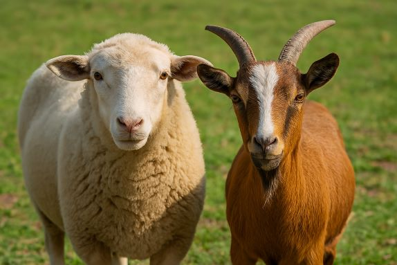
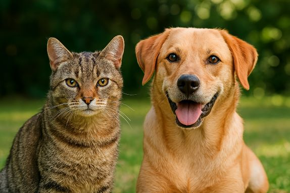

Cattle
We offer a comprehensive range of veterinary medicines and health solutions tailored to the needs of cattle. From preventive care to targeted treatments, our products are designed to support herd health and productivity. We also provide expert consultation and technical support available upon request. Please don’t hesitate to contact us for more information or personalized assistance.

Sheep & Goats
We provide a specialized selection of veterinary medicines and health products designed to meet the unique needs of sheep and goats. Our offerings support disease prevention, parasite control, and overall herd vitality. We also offer free consultations and tailored guidance to help you care for your animals with confidence. Feel free to contact us for expert advice or product recommendations.
Equine
We offer high-quality veterinary medicines and care solutions specifically formulated for horses. Our range includes treatments for performance support, parasite control, and general wellness. Free consultations are available to assist you in selecting the right products for your horses' needs. Don't hesitate to contact us for expert guidance and support.

Pets
At Vetocos, we take pride in offering premium veterinary products for dogs and cats, sourced through partnerships with leading international manufacturers. Our close collaboration with trusted global brands ensures that every product we supply meets the highest standards of safety, efficacy, and innovation. Whether for preventive care or specific treatments, our pet solutions are trusted by veterinary professionals and pet owners alike. We invite you to discover our range because your companions deserve nothing but the best.